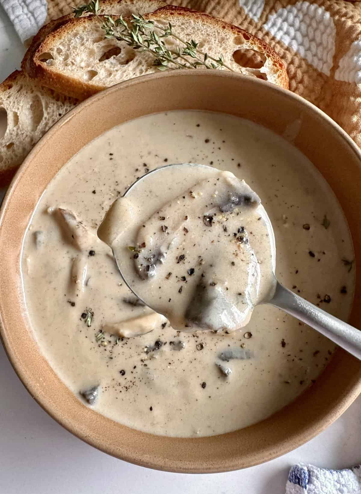

Mushroom Soup

Description
Mushroom soup is a creamy and flavorful soup that is perfect for a comforting meal. It is easy to make and can be served as a main dish or as a side dish .
Ingredients
- 3 tbs olive oil
- 3 tbs butter
- 1 large onion, chopped (2 cups)
- 4 cloves garlic, minced
- 24 oz mushrooms, cleaned + sliced 1/2 inch thick
- salt and pepper to taste
- 1-2 pinch of cayenne pepper (optional)
- 1/4 cup flour
- 1/4 cup dry white wine
- 4 cups low sodium vegetable broth (or chicken broth)
- 1 tbs low sodium soy sauce
- 1 tbs fresh thyme
Instructions
- To one large pot, add your olive oil and butter and melt on medium heat . Then add in the onion and saute for 5 minutes.
- Stir in the garlic for 30 seconds. Add in the mushrooms, salt and pepper to taste (and cayenne if using) . Stir it all to saute for 10 minutes.
- Next, sprinkle on the flour and stir to coat all. Pour in the wine and mix to combine and deglaze the pot if needed.
- Pour in the broth, soy sauce and thyme and bring to a boil. Lower the heat to low and simmer COVERED , for 20 minutes, stirring occasionally.
- Transfer about 2 cups of the soup to a mini food processor or blender to puree . Add it back into the pot and mix to combine.
Back to Home